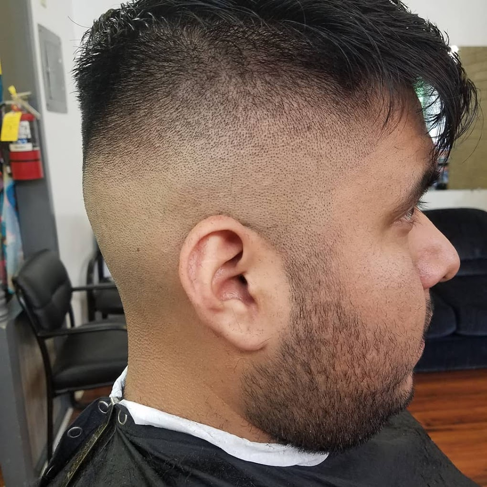
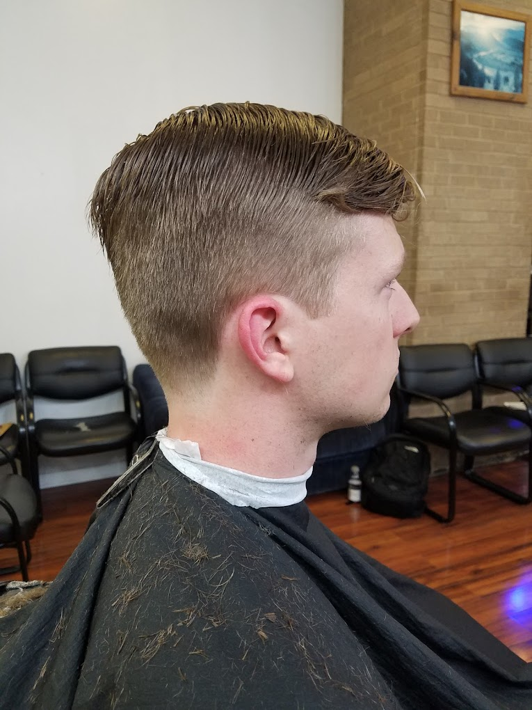
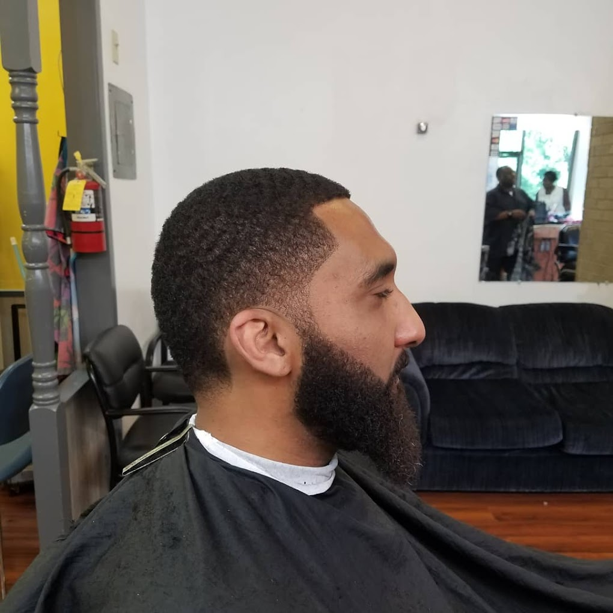

A bald fade haircut with a clean transition from the skin to a short length on top. It's often referred to as a "Skin Fade" or "Zero Fade," ideal for a sharp and clean look.


A classic taper fade with longer hair on top and a gradual fade on the sides and back. This cut is versatile and works well for a more natural, professional style.

A low fade with a sharp edge-up and a full beard. The clean lines and gradient give it a sharp, modern look, often referred to as a "Low Fade with Beard.